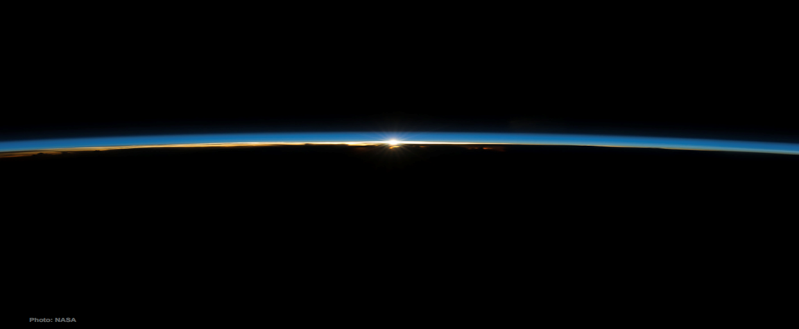
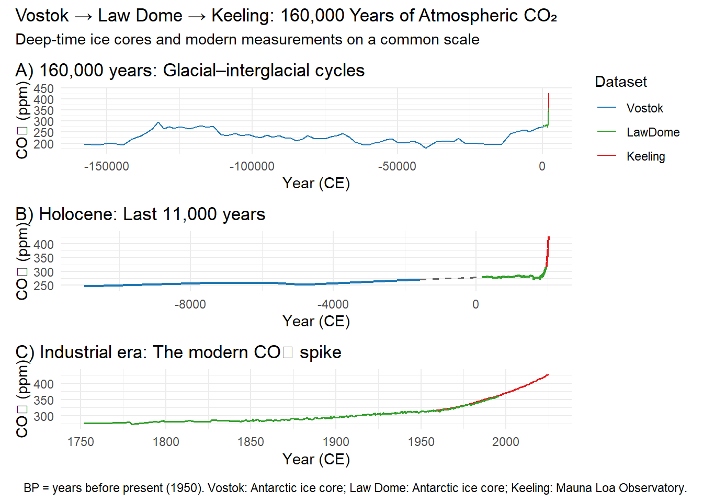
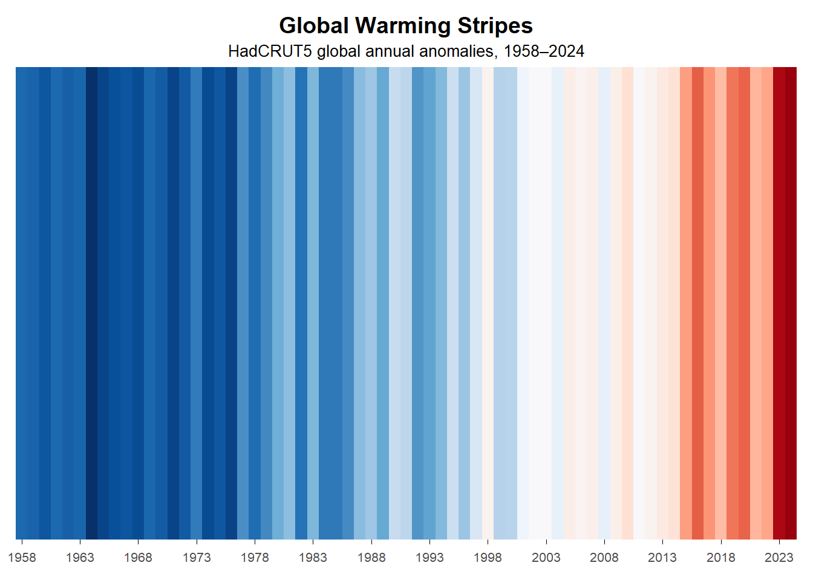
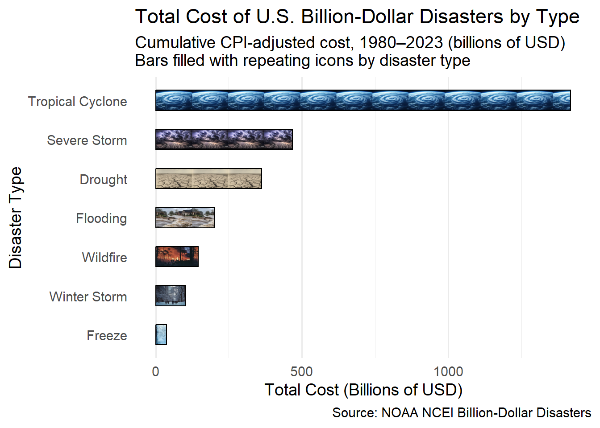

Exerpts from a Carbon Story
The Past, Present, and Future
Author: David Takahashi
December 2025
David’s Final Project
I have been learning how to incorporate data visualization in my workflow. In order to do this I started a personal project that documents the discovery of Climate Change. This has meant finding publicly available data archives, downloading them, loading and cleaning the data, and then using the data frames to render visualizations.
This is an excerpt of my progress. The header is a shot of the thin atmosphere that reaches 63 miles above the ground. If the Earth were a basketball, our atmosphere would be like shrink wrapping. The atmosphere is where much of the climate change action is happening.
Fasten your seat belts, folks.
Background
David’s late father-in-law, David Keeling, was an Earth Scientist who recorded the concentration of CO2 in the atmosphere daily, starting in 1958. In visits to his daughter, we would take long walks that allowed me to understand his research. The concentration of CO2 is measured in parts-per-million, and CO2 comprises 0.04% of the atmosphere. With the accurate data, scientists were able to predict the consequences of rising CO2 concentrations.
David’s home burned to the ground in a wildfire outside Boulder, CO in September 2010. The wildfire was a predicted consequence of global warming.
The Keeling Curve
There has been mounting evidence that the climate is changing due to increased heating of the atmosphere. The record we know as the Keeling Curve provided circumstantial evidence that the increased concentration of CO2 is rising, with it global temperatures, and that the rise is attributed to the burning of fossil fuels. I decided I would begin my research by locating, downloading, and graphing the data that has been recorded since 1958. Here is the chart: the saw-tooth behavior and the year-over-year rising are notable:
In 1958 David Keeling began accurately recording the concentration of CO2 in the northern hemisphere. The first few years he was puzzled by the rising and falling of the concentration. He thought his instrumentation might be faulty. His tests verified that his instruments were reading reference samples accurately. The first 3 years of data looked like this:

After three years of data collection, it became clear that the concentration of CO2 rose and fell on a seasonal cycle. What had initially looked like faulty instrumentation turned out to be the rise of CO2 in the winter when photosynthesis was curtailed and the falling when trees were fully leafed out and photosynthesizing CO2. This was a surprising revelation. This rising a falling, year after year was recognized as the Earth respiring just as we do.
The Suess Effect:
That the concentration was rising became obvious. But why the steady increase? The Suess Effect is crucial for climate science because it’s a fingerprint of human activity, showing a dilution of heavier carbon isotopes (13C and 14C) in the atmosphere and oceans due to burning fossil fuels, which releases carbon lacking these isotopes. It provides undeniable proof that rising CO2 levels stem from fossil fuels, not natural cycles, helping attribute climate change to human actions and serving as a baseline for tracking carbon uptake by oceans and land, informing climate models and mitigation strategies.
This fingerprint of human activity, showing a dilution of heavier carbon isotopes 13C and 14C in the atmosphere and oceans due to burning fossil fuels, which releases carbon lacking these isotopes. It provides undeniable proof that rising CO2 levels stem from fossil fuels, not natural cycles, helping attribute climate change to human actions and serving as a baseline for tracking carbon uptake by oceans and land, informing climate models and mitigation strategies. Here we see as CO2 levels rise the increasing 12C from fossil fuels decreases the 13C/12C ratio:

The Historical Record
It turns out that we can measure the temperature record over the last 150,000 years. To do this I chose to use the Vostok and Law Dome historical data. Vostok and Law Dome measure historical temperatures using ice cores, analyzing the ratios of heavy to light oxygen and hydrogen isotopes (like Deuterium) in water molecules, which vary with past air temperatures, and also by studying air bubbles trapped in the ice to find ancient greenhouse gas levels, correlating these proxies to reconstruct past climate, with Vostok famous for long CO2 records and Law Dome for high-resolution recent data.
Combining these data sets give us the well-known hockey stick chart. I have chosen to depict this a three layer chart which shows the measurements over the last 160,000 years, over the 12,000 Holocene years, and over the 50 years of the Anthropocene.

Evidence of Global Warming
Climate stripes visually show global warming by using colored bars (stripes) for each year, with blues for cooler-than-average years and reds for warmer years, revealing a stark, undeniable shift from cool blues to intense reds, directly correlating with the rise of human-emitted greenhouse gases like CO2 that trap heat and cause this warming trend. The darker the shade, the further the temperature deviates from the long-term average, making the rapid increase in recent decades visually clear and impactful.
Though I have downloaded temperature data from ice-core and tree-ring data. I have chosen to only show the years covered by the Keeling curve to suggest how global mean temperature tracks with increasing CO2 concentrations:

CO2 Level Rise as Rising Temperature
This leads to inquire whether we can display the CO2 effect on global temperature in a single graph. Here is an attempt to distill how the increasing levels of atmospheric CO2 are affecting global temperatures:

So, why do we care if the climate changes?
Consequence #1: increasingly frequent and intense climate disasters
There’s a strong positive correlation: as CO2 levels and global temperatures rise, the frequency and cost of billion-dollar climate disasters (like hurricanes, floods, droughts) also significantly increase, demonstrating that rising greenhouse gases are directly linked to escalating economic burdens from extreme weather events, according to studies analyzing U.S. data from 1980-2021. Here, we look at the accumulated cost of the recorded billion dollar events since 1980.

Consequence #2: Glacial loss around the world
CO2 concentration and glacial retreat have a strong, intertwined relationship: higher CO2 causes warming, leading to glacier melt, while melting ice reduces Earth’s reflectivity (albedo), causing more heat absorption, and warm oceans release trapped CO2, creating a dangerous positive feedback loop that amplifies warming and accelerates retreat, making it a critical indicator of climate change’s severity. It matters because this cycle drives sea-level rise, alters water resources, and releases more greenhouse gases (like methane and CO2 from fungi/soil), impacting ecosystems and human communities globally. The Correlation: A Vicious Cycle.
Here we look at a before and after look at glaciers around the world using global mapping tools:

Consequence #3: Sea Level Rise
Higher CO2 levels trap heat, warming the planet, which directly causes sea level rise through melting ice (glaciers, ice sheets) and thermal expansion (warm water taking up more space), a critical issue because rising seas threaten coastal communities, infrastructure, economies, and ecosystems with flooding, erosion, and saltwater intrusion, impacting millions globally. This correlation is strong over geological time and current human-caused warming amplifies it, though sea level response lags behind immediate warming due to ocean and ice inertia, meaning effects persist for centuries.
For instance, here is a 50 mile radius around San Francisco, CA. If sea level rises 1.5m you will see purple…and at 2m rise you see red. We can do this by generating an area map, then using a high resolution Digital Elevation Model (DEM) to query a locations elevation above sea level, and using this to color a dot over the map. The current implementation only does locations in the U.S.: other countries may or may not have publicly available data available.

What I learned
The workflow I developed looks something like this:
What question do you wish to ask?
Where is data that supports that question?
Download that data and place it in a raw data folder.
Move that raw data into an RDS file in a ‘cleaned’ data folder, doing any cleaning, joining, or conversion as you go. This data drives the graphical representation.
Use the ‘cleaned’ data to create a chart. The question asked will help determine the charting method (line, bar, map, facet) that fits the stated purpose. Refine the chart using best practices and standard theming into a ‘final’ data visualization. Use the RStudio plot pane as a quick view, but always save an image to ensure the final Quarto image is legible.
Consider these ‘final’ visualizations as ingredients to be assembled in a Quarto document.
Assemble this final document.
This pattern tended to repeat itself over the evolution of the report. Every graph shown, and many others not shown, were exercises in asking for data, finding it, cleaning it, using it to create a visualization. I believe this is the ‘general’ workflow in data visualization work.
Addendum
A couple of things really stood out about this project.
The R community
The first is the rich ecology of the R community. The ability to handle this workflow with such ease, and the extensible nature of the Grammar of Graphics made this excursion a true joy. This used to be an expensive foray into expensive graphics platforms like Tableaux, but this experience simply cost me time: time I would have spent learning any graphics platform. When I needed something new, the R community generally had made a package available to accomplish a new required feature or visualization.
Public domain data
The Trump administration has formally announced its intent to dismantle the National Center for Atmospheric Research (NCAR) and has proposed massive budget cuts to the National Oceanic and Atmospheric Administration (NOAA), which would eliminate its core climate and weather research functions.
Much of data I needed to find has been archived by either NCAR or NOAA. This data is global in scope. Losing access to it will be a incredible loss of relevant information about our world. Losing it is like losing our sight or sense of touch. We will be stumbling around in the dark.